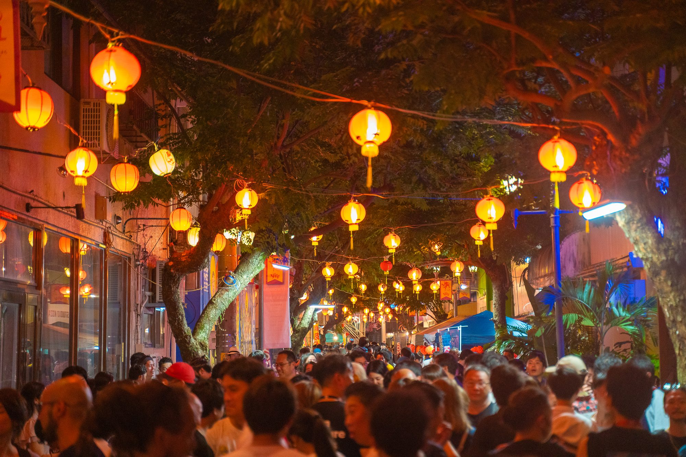
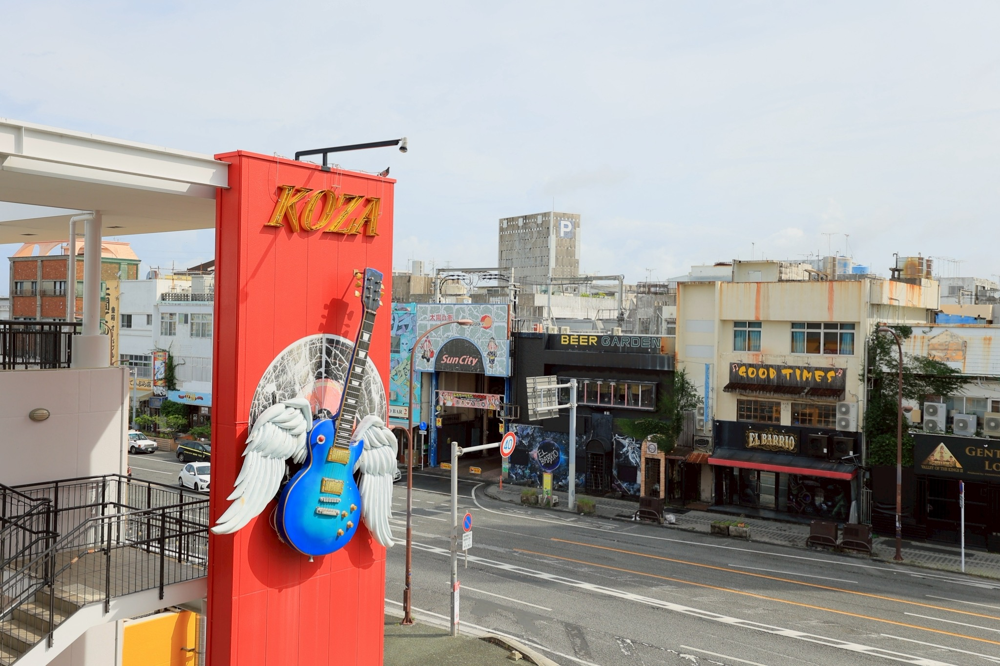

Planning & Produce
企画・プロデュース
- 企業や地域の新しい企画・プロジェクトづくり
- ブランドや商品の企画開発
- プロジェクトの立ち上げ・運営支援
- 地域プロジェクトの月額伴走
実績：KOZA BASECAMP／Paint The City
詳しく見るLocal Creative Company / Koza, Okinawa
沖縄・コザを拠点に活動するクリエイティブカンパニー
企画から、制作、実行まで。クリエイターとチームを組んで、企業や挑戦する人たちのプロジェクトを形にします。

What we do
ポスター1枚の制作から、企画・実行までまるごと任せる形まで。必要な関わり方でご一緒します。
Planning & Produce
実績：KOZA BASECAMP／Paint The City
詳しく見るCreative Production
実績：パルミラ夜市／KSA ROOTS MARKET／MIKKA
詳しく見るEvent & Experience
Projects
自分たちで仕掛けている事業と、クライアントと一緒につくった仕事。背景から完成までを紹介しています。
How we work
作って終わりにはしません。企画の入口から実行、その先まで伴走します。
目的と「成功の定義」を一緒に決める。
案件に合うクリエイターとチームを組む。
WEB・映像・グラフィック・空間を形にする。
イベントや現場の運営まで一緒に走る。
単発で終わらせず、次の企画や事業につなげる。
About
音楽も、商いも、文化も、人の生き方も。まっすぐではなく、少しノイズを含みながら重なっていく。コザには、外から来た人とも混ざり合ってつくれる力があります。
Cignalsはこの街を拠点に、クリエイターや挑戦する人たちと新しい仕事を生み出し、そのつくり方をほかの地域にも広げていきます。
Cignalsについて
Journal
プロジェクトの裏側にある、
想いやプロセスを記録する。
Contact
内容を選んで、フォームからご相談ください。企画が固まる前の段階でも大丈夫です。
まだ内容が固まっていない方は、30分の無料相談もご利用いただけます。